Structural Hardware
A standardized frame built from 4040 aluminum profiles defines the precise geometric layout of the robot arms, cameras, lighting, and workspace.
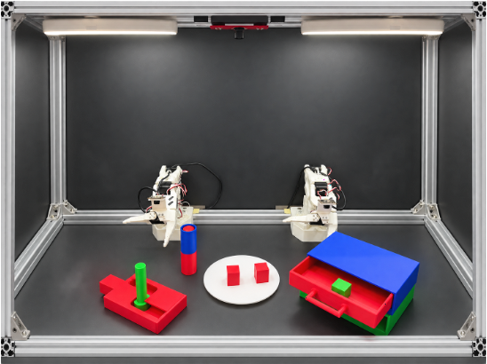
BREE-Assets / physical specification
The Open-Source Toolkit for Reproducible Bimanual Manipulation
BREE-Assets provides all the files and protocols you need to construct, calibrate, and standardize your bimanual robotic platform. By following our blueprints, you eliminate physical hardware variance across different sites and ensure your data and policies remain perfectly compatible.
A standardized frame built from 4040 aluminum profiles defines the precise geometric layout of the robot arms, cameras, lighting, and workspace.

Custom physical calibrators and calibration procedures enforce consistent joint zero points, sensor poses, and imaging parameters across every BREE instance, ensuring data comes from a consistent source.
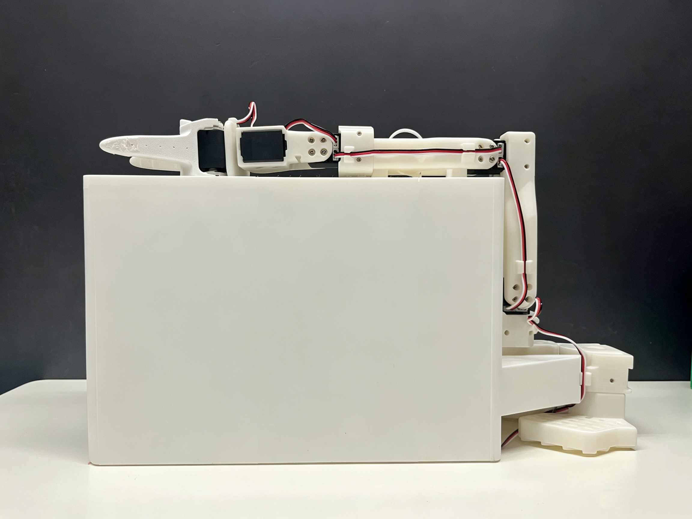
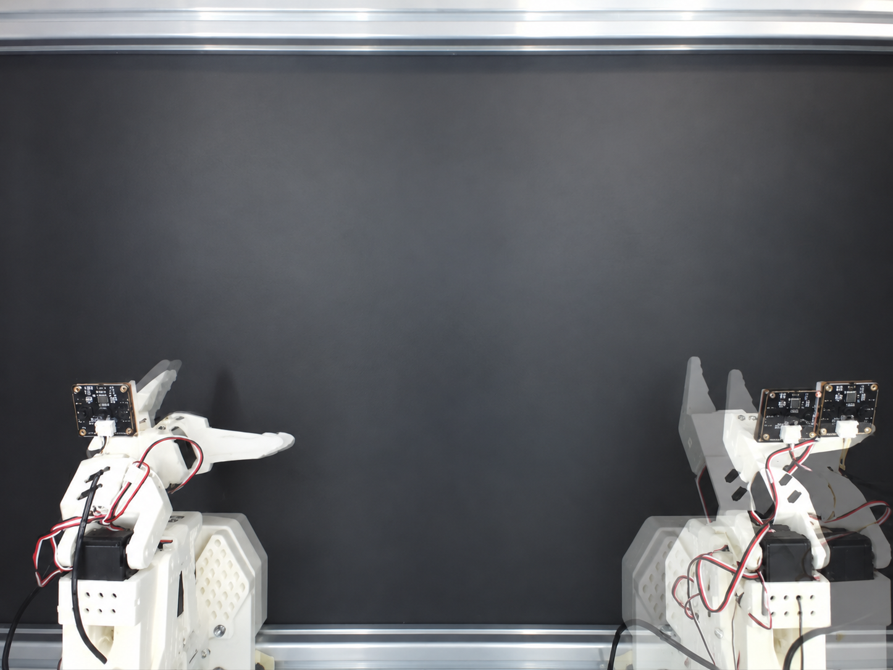
Eight classes of 3D-printed task objects ensure that tasks remain identical across platforms.
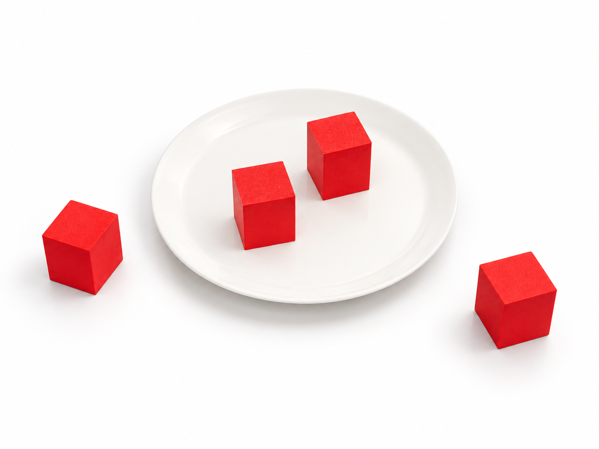
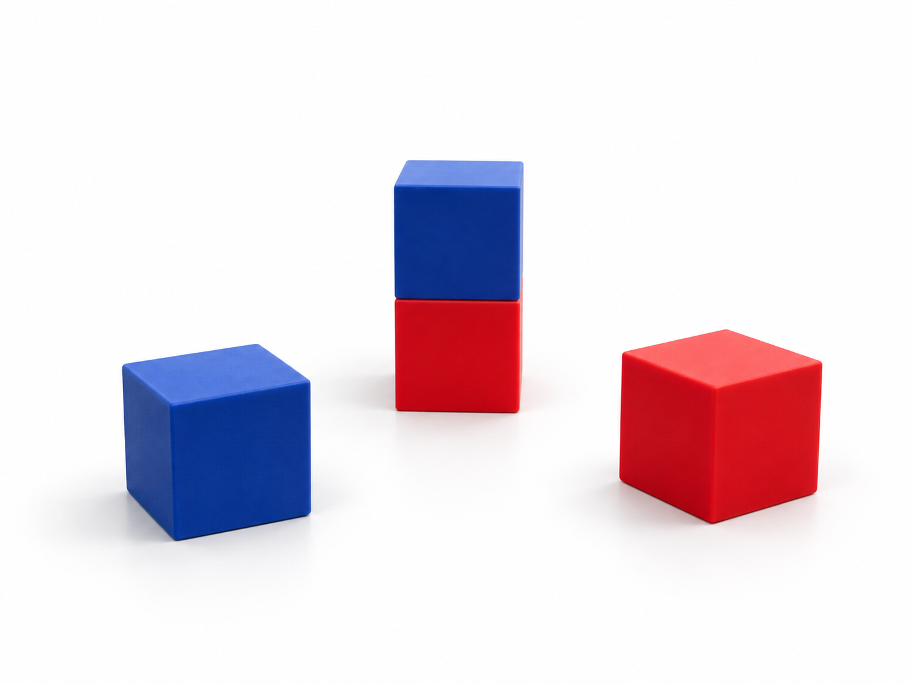
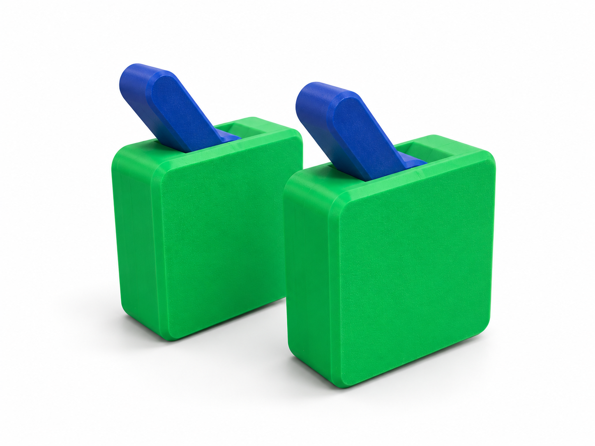
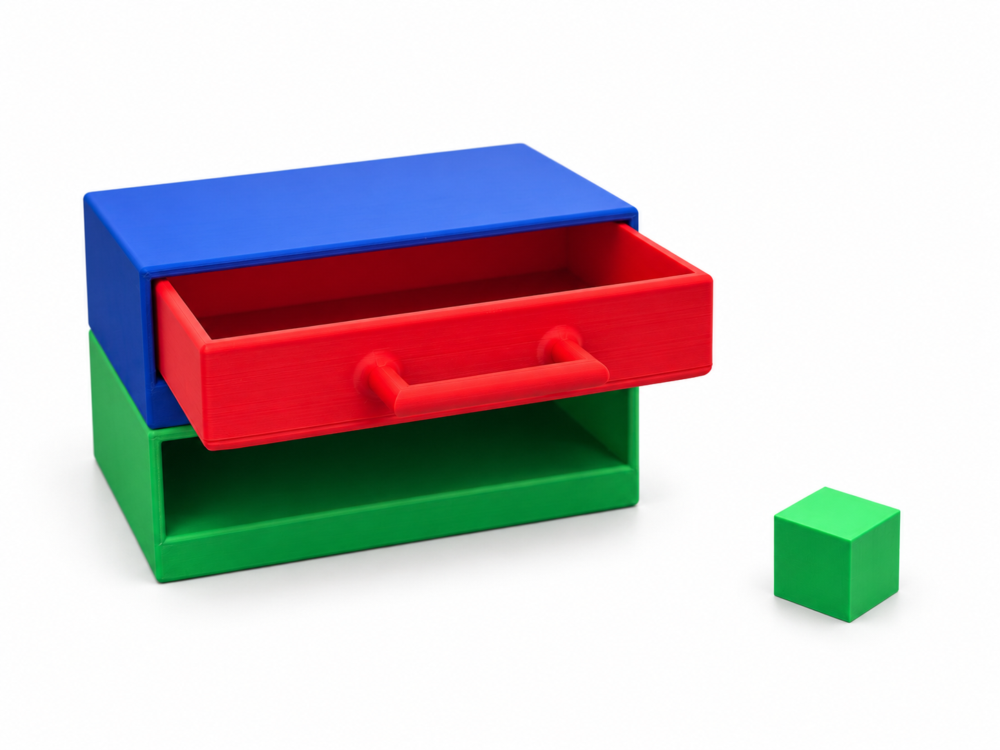
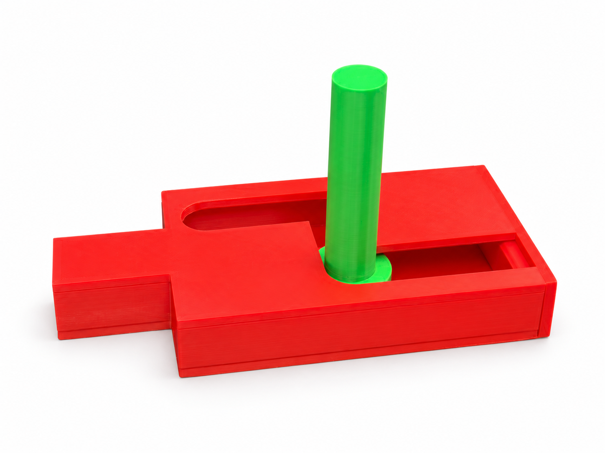
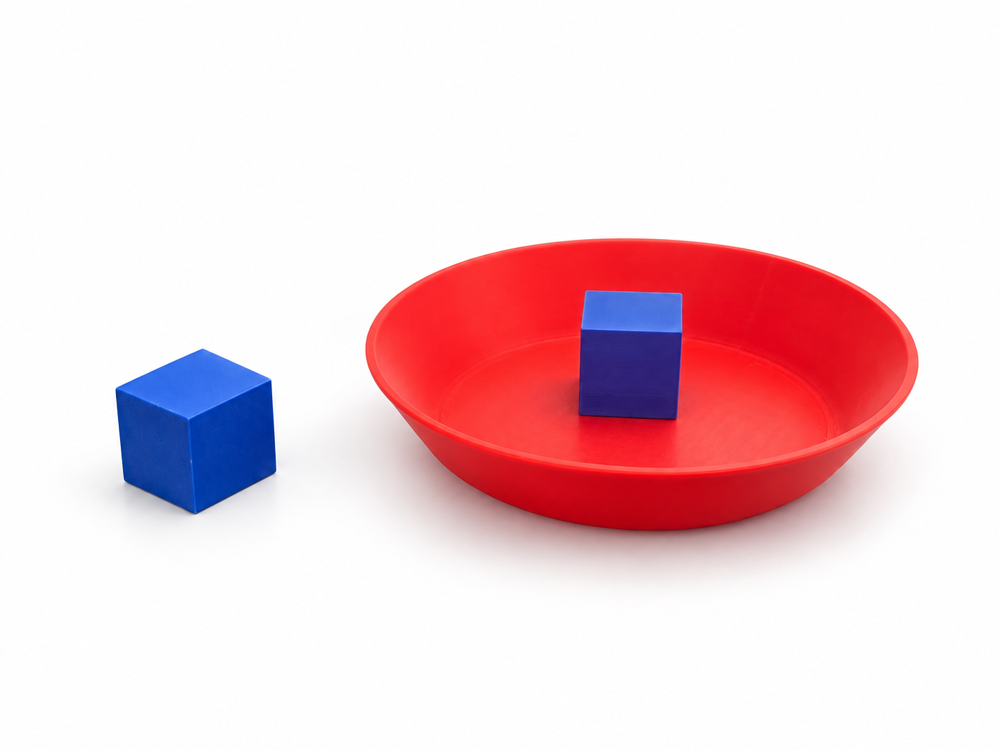
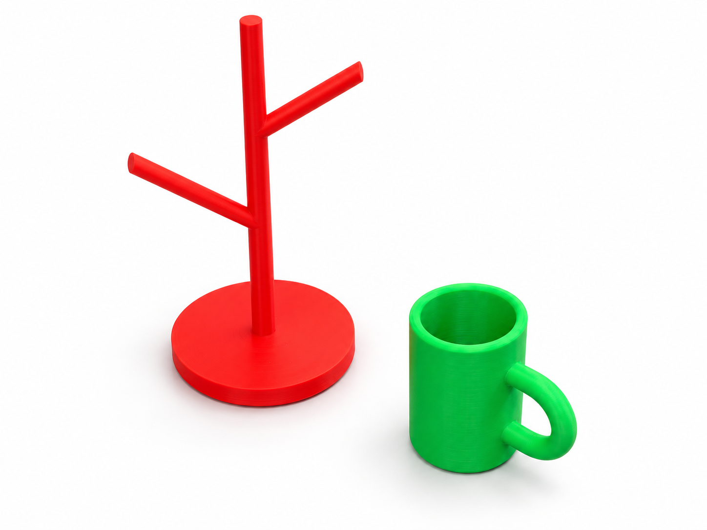
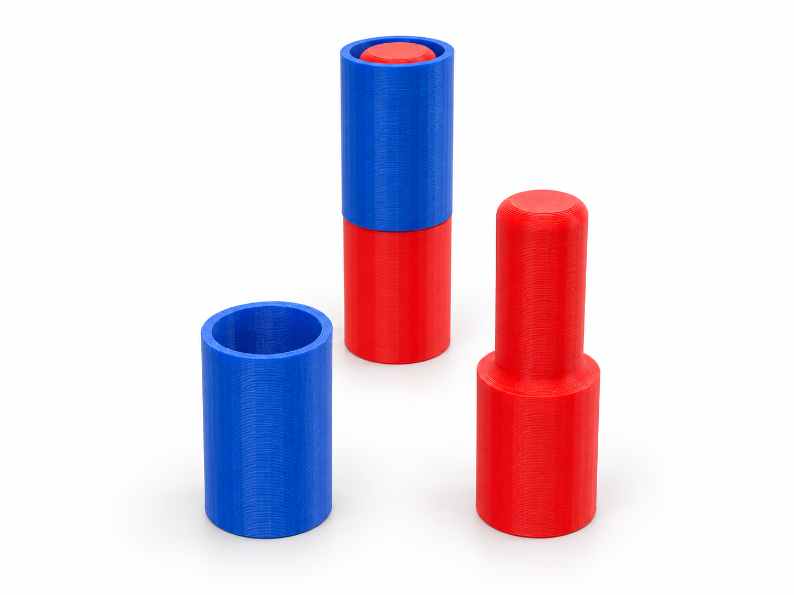